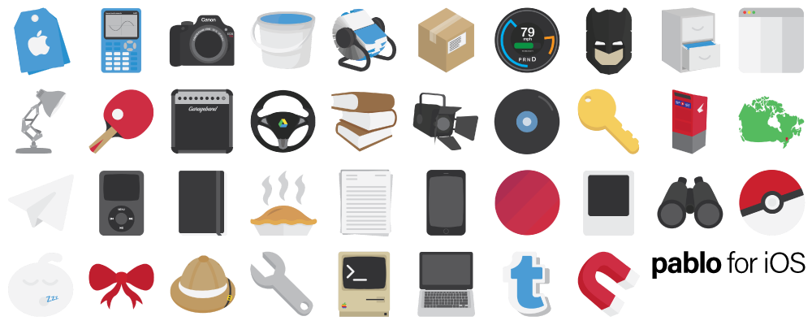

pablo for iOS
pablo is a theme i created in 2016 with a focus on attention to detail and character. the whole of pablo spans across iOS and macOS, with the entire package of icons available to download from this link.
when i dreamt up pablo, the goal was to create an icon pack that was different from every other glyph theme. i wanted to build a theme that was beautiful, but that showed depth to icons when it came to what they were, how they represented their respective applications, and how they were presented in a way that showed depth and character without going overboard with shadows or other unneccesary things.
i'm very proud of what came out of pablo for iOS. pablo currently includes ~100 meticulously crafted icons (with more on the way), and although it's early on in the theme's life there are plans for expansion which include status bar, control centre, and settings themes. stay tuned to this page and my twitter for updates on the progress of pablo for iOS!
you can download a free preview of pablo for iOS on my public repo (which you can add to your sources by pasting this page's url into your cydia source list), and purchase the full version on my official website idkjoel.co.